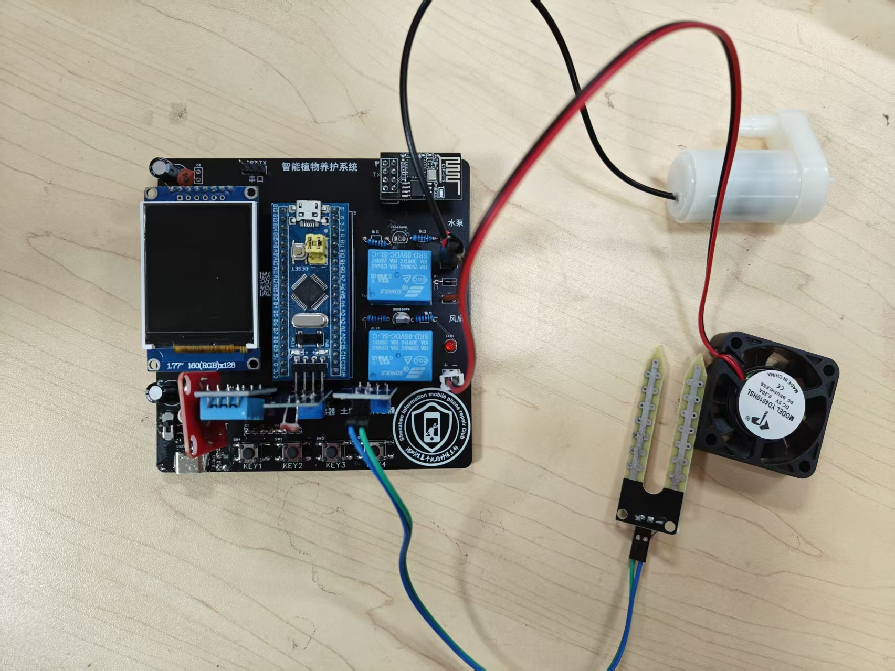
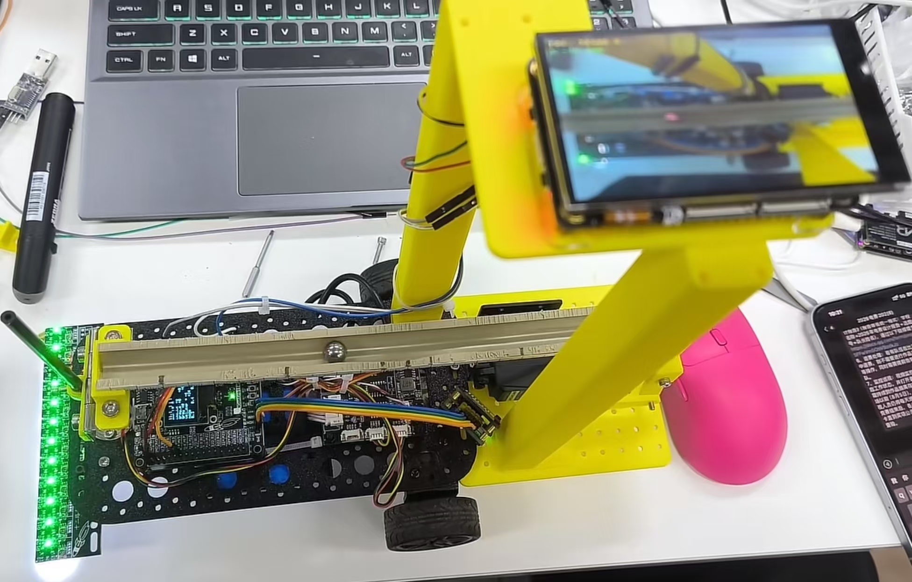
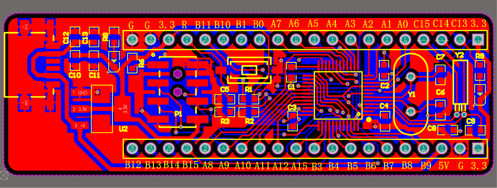
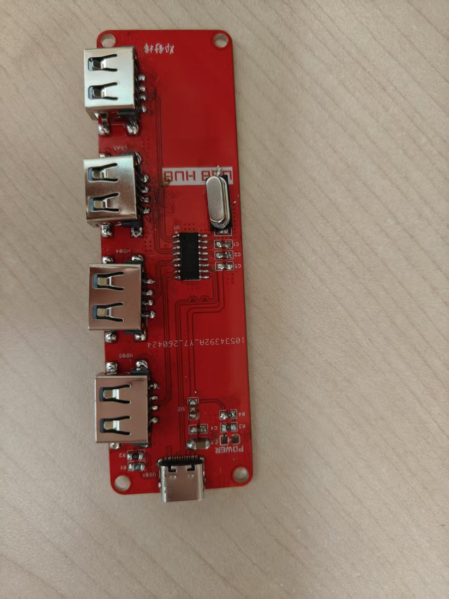
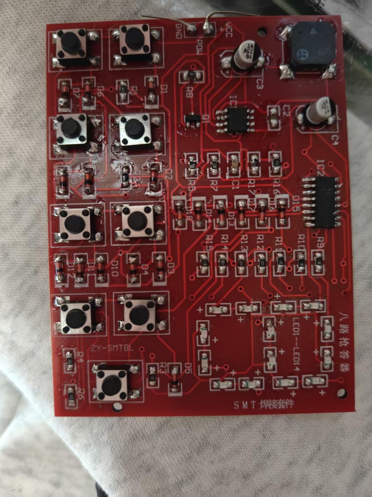
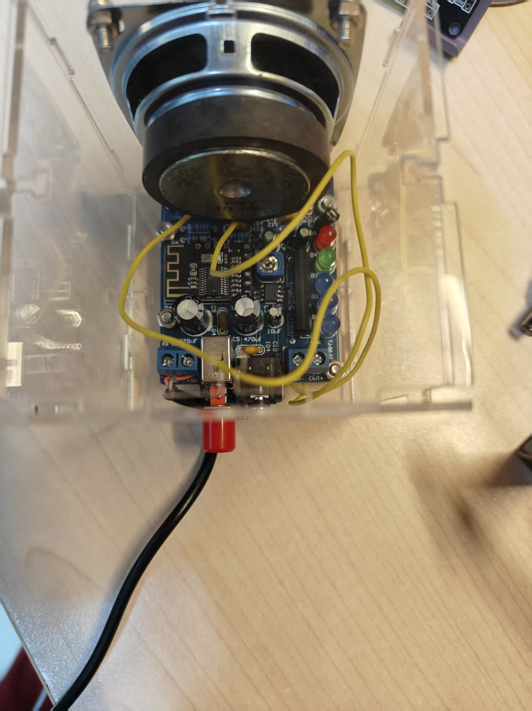
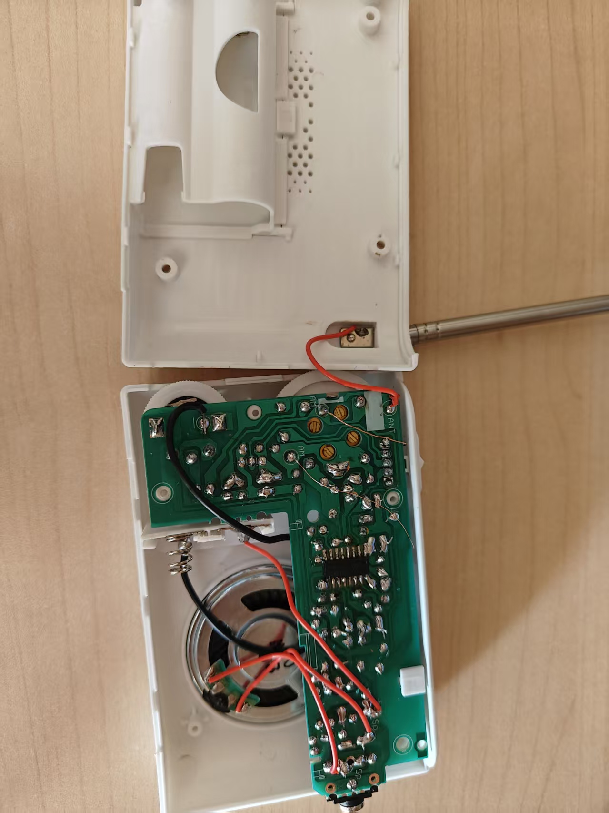
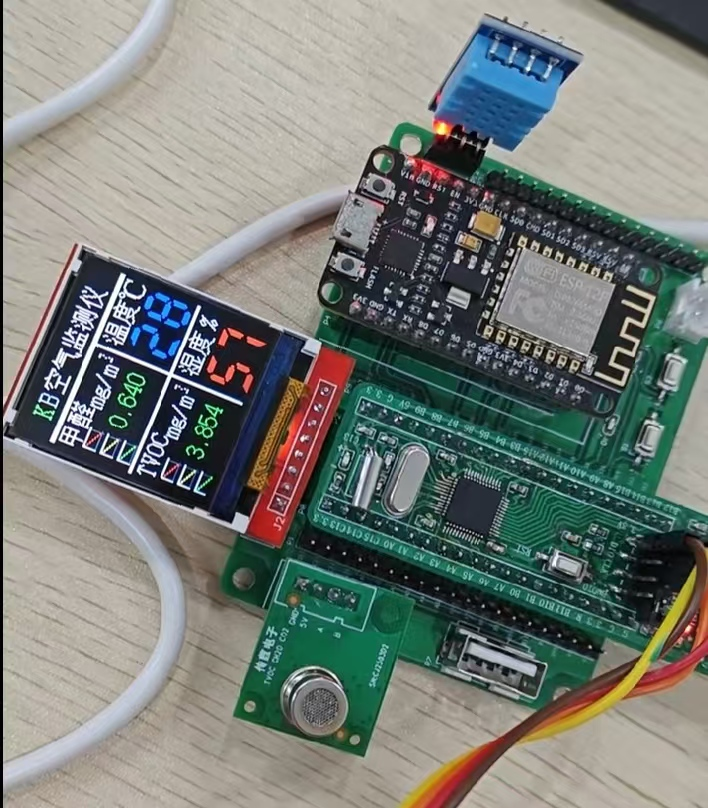
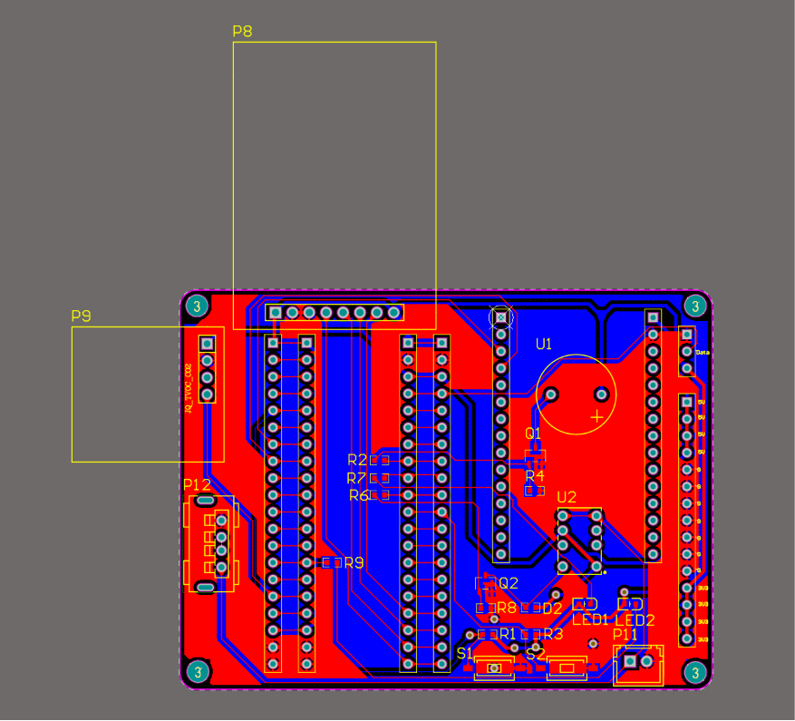
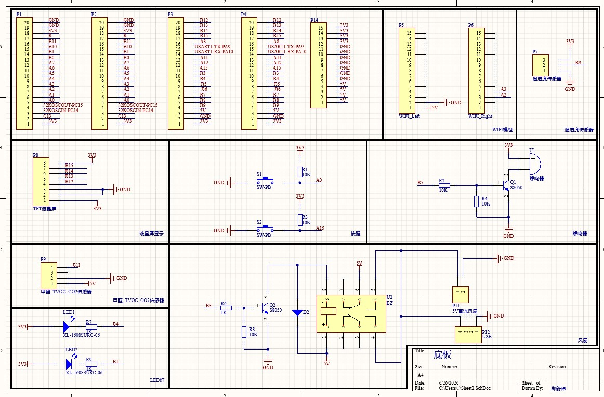

在打印窗口选择“另存为 PDF”
硬件工程师实习生
📧 2647703552@qq.com · 📱 19880841256 · 🏠 现居深圳
🔗 github.com/zsm-88 · 📍 籍贯广东汕头 · 🎂 2005年11月
就读于深圳信息职业技术大学智能产品开发与应用专业，具备从电路设计、焊接装配到实物调试的完整硬件实践经历。 能够使用嘉立创EDA独立完成原理图绘制与 PCB Layout 设计， 熟练完成 SMD/DIP 元器件的手工焊接与整板装配， 能使用万用表、示波器、逻辑分析仪进行上电调试与硬件故障排查； 并能使用 C 语言完成 STM32 程序开发，独立编写传感器采集、执行器控制与数据上传程序，实现软硬件联调； 独立完成过 STM32 核心板、智能空气检测器等项目，涵盖原理图设计、PCB 打样与整板焊接装配。 在校期间综合排名班级第 1，获校级焊接技能大赛二等奖、全国大学生电子设计竞赛省二等奖， 应聘硬件工程师实习生岗位。
🏅 成绩排名：专业前 5%，班级第 1
👥 班级职务：班级学习委员
📖 主修课程：电路分析、模拟电子技术、数字电子技术、PCB 设计、单片机应用技术、程序设计基础、Linux 系统编程、计算机视觉

基于 STM32F103C8T6 的植物生长环境智能监测与自动调控系统， 独立完成电路搭建、传感器与执行器接线、焊接装配、板级调试及全部程序开发。
搭建多路环境传感器采集电路，接入风扇、水泵、LED 补光灯等执行器件， 实现浇水、通风、补光闭环管理；LCD 实时显示参数，按键在线设置阈值。 通过 Wi-Fi 模块联网，使用 MQTT 协议将数据上传至 OneNet 云平台， 可在手机端远程查看；整机经上电调试后稳定运行。

2026 年全国大学生电子设计竞赛（TI 杯）H 题项目，3 人团队协作。 设计制作循线小车，行驶同时通过摆杆角度控制机构将钢球稳定在指定位置。 负责循迹控制与摆杆闭环控制的程序设计，参与视觉定位部分的调试， 并承担整车软硬件联调（含模块接线检查、通电测试与故障排查）。
红外光电循迹与定点启停； 摄像头采集图像检测钢球位置，配合 PID 闭环控制摆杆， 实现 ±5cm 往复移动与行驶中动态稳定（误差≤1cm）； 搭建图传装置实时回传钢球画面，用于调试与效果验证。







